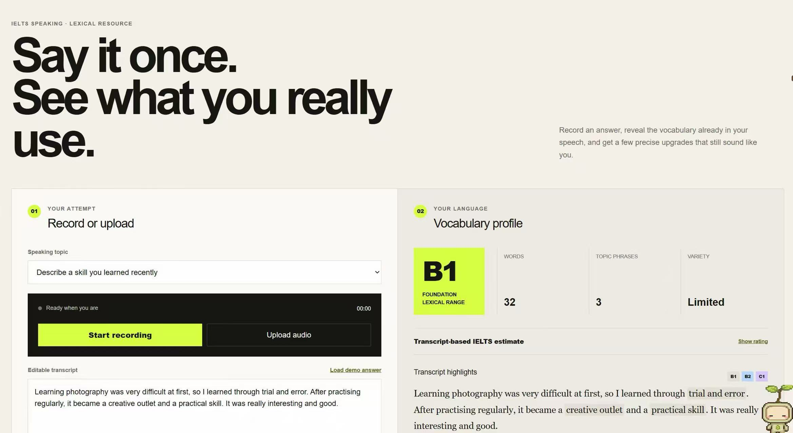
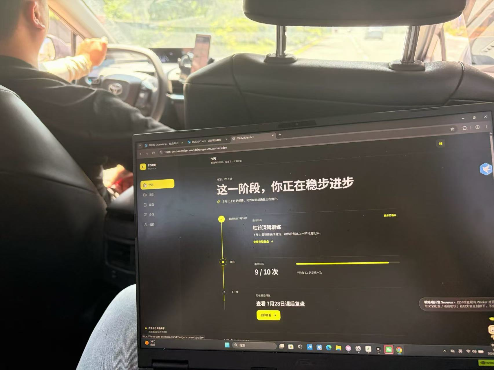
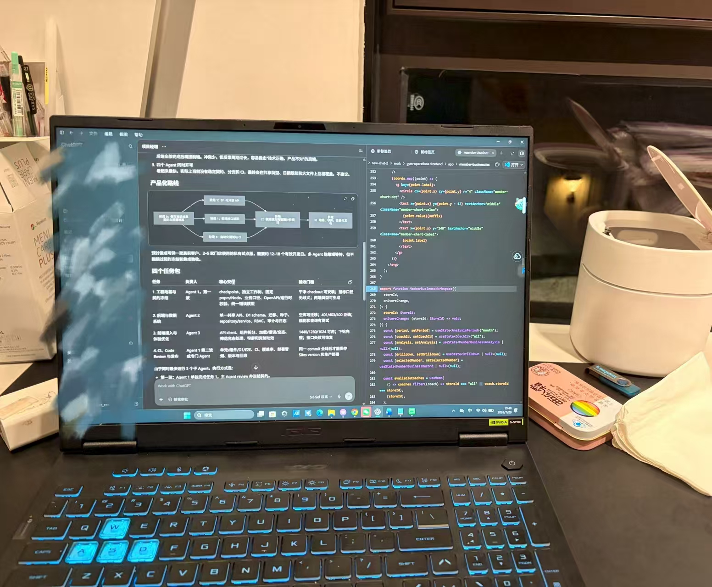

关注 AI 工具，从零搭建英语教育品牌。从高校学习者，逐步成长为 AI + 英语 + 项目实践者。
不是嘴上说说——每一条都能拿出手。
"奇妙点子 × 执行力"不是一句口号——这四个是正在跑起来的证据。

通过录音，分析口语真题回答情况，提出个性化词汇升级建议，并进行长期跟踪。


简化教练课后录入与复盘流程，让用户看清自己的训练进步。
以自己的学习理念、训练观点和笔记为基础，整理英语资料，形成能够服务高考生的学习材料。
在复杂的用户交往场景中，记录每位用户的特点、偏好与需求，并定期提醒跟进和回访。
球场二三号位摇摆。
目前正在打磨三分，希望能稳定到十中五。
想聊 AI 工具、英语学习方法、知识管理，或者别的什么，都可以找我。